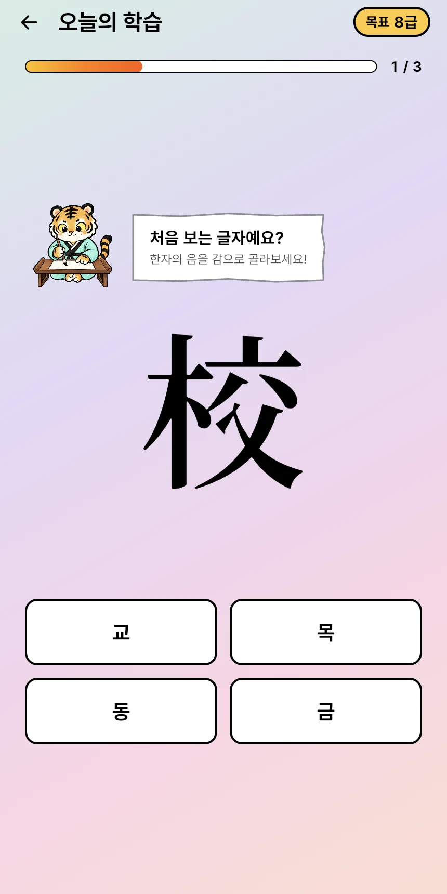
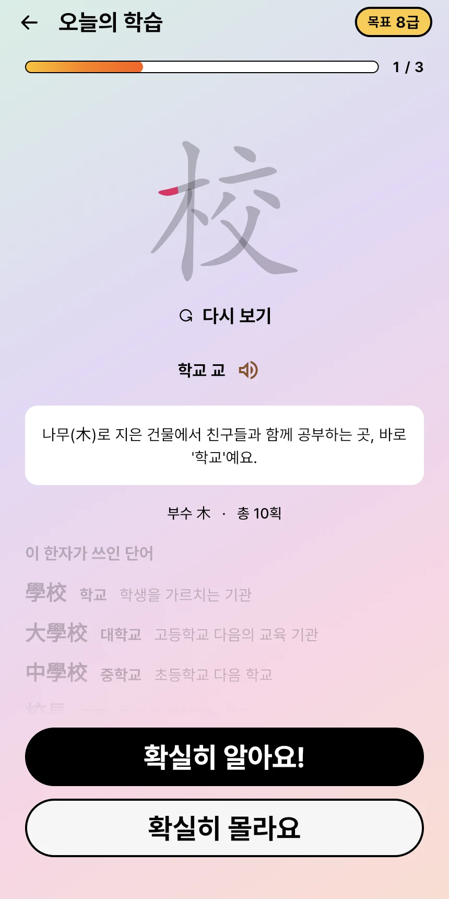
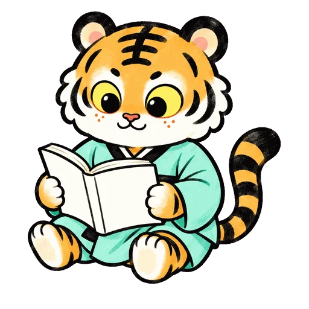
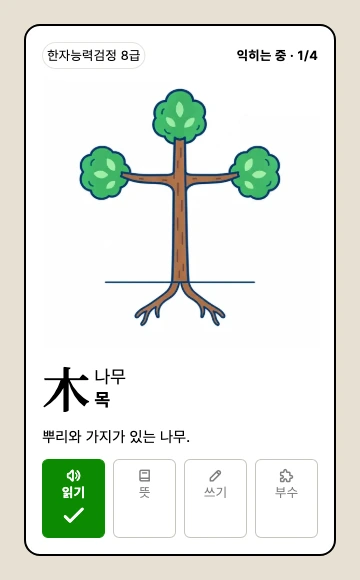

뜻을 연결해요
이미 알고 있는 모양과 이야기에 새 한자를 연결해요. 다시 떠올릴 단서를 만드는 연상 학습이에요.
한자와 어휘를 함께 배우는 학습 앱.
처음 한자를 만나는 아이부터 급수를 준비하는 학생까지.
직접 쓰고, 이야기로 만나고, 내 속도에 맞춰 복습해요.
설치·가입 없이 웹 체험 · iOS·Android 출시 준비 중
정식 앱 예정가 29,900원 · 한 번 구매 중2 아들을 위해, 아빠가 수없이 고쳐 만들었습니다.

한 글자가, 아는 낱말이 되는 순간.
읽고, 쓰고, 이야기를 완성하는 32초.
실제 어흥!한자를 만나 보세요.
실제 웹 베타 화면을 담은 소개 영상입니다. 일부 장면은 빠르게 편집했으며, 화면과 기능은 출시 과정에서 달라질 수 있습니다. 소리를 켜면 음악도 함께 즐길 수 있어요.
배우고, 써먹고, 다시 만나는 흐름.
앱 안에서는 이렇게 이어집니다.
획순으로 모양을 익히고, 연상으로 뜻을 연결해요. 학교·대학교·중학교처럼 같은 한자를 쓰는 단어를 함께 만나니, 한 글자의 배움이 우리말로 넓어집니다.
8급부터 1급까지 한자 3,500자, 단어 14,425개 항목을 담았습니다. 급수에 따라 제공되는 학습 유형·삽화·음성 범위는 다릅니다.
29,900원
정식 앱 출시 예정 가격 · 일회 구매
카드 등록 없는 3일 체험.
자동 갱신 구독은 없습니다.
현재는 웹 베타입니다. 스토어 출시·결제는 준비 중이며, 최종 판매 범위와 이용 조건은 출시 때 안내합니다.
설치 없이 열어 보세요.
시작할 때 정할 것은 많지 않아요.
처음이라면 8급부터.
목표에 맞춰 출발점을 정해요.
새로 배울 한자의 수를 정해요.
부담 없이 이어 갈 만큼만.
새 한자와 다시 볼 한자를 만나며,
나만의 공부를 쌓아 가요.
소개용 연상 체험 · 학습 기록에 저장되지 않아요
뜻을 발견하는 재미에서,
혼자서도 떠올리는 자신감까지.
앱에서는 획순을 살피고, 직접 쓰고,
기억만으로 다시 써
봐요.
맞히는 순간마다 ‘나도 아네!’가 쌓이도록.
연한 글자를 따라 써 보세요. 여기서는 채점하지 않아요.
어떤 내용을 잘 알 수 있도록 밝혀 말하는 것.
친구에게 문제 풀이를 설명했어요.
소개용 풀이·예문 · 국립국어원 사전 수록 어휘
‘밝을 명’을 익히고 나면
설명, 명확, 문명 속의
明이 보여요.
한국어기초사전·표준국어대사전의 한자어를 바탕으로, 단어와 예문을 학습에 연결했어요. 한 글자를 넘어, 교과서와 일상에서 만나는 어휘까지 차곡차곡.
앱에서 다른 낱말도 만나기
아빠가 만들고,제대로 된 한자 앱,
하나 만들어 보자.
중학교 2학년 아들에게 한자를 공부시켜 보고 싶었습니다. 그 마음으로 직접 만들기 시작했어요.
만든 뒤에는 아들에게 써 보게 했습니다. 어디서 막히는지, 어떤 순간에 재미를 잃는지. 실제로 쓰는 아들의 피드백을 수없이 받으며 고치고, 또 고쳤습니다.
단순히 정답을 알려 주는 데서 끝내고 싶지 않았어요. 연상으로 연결하고, 직접 써 보고, 자기 힘으로 떠올리는 공부. 기억과 학습에 관한 연구, FSRS 복습 알고리즘까지 들여다본 이유입니다.
친구처럼 편하게 다가가면서도 배울 것은 제대로 배우고, 작은 성취가 다음 공부로 이어지도록. 효과적이면서 재미있게 만들기 위해 최선을 다했습니다.
아들이 한자 급수를
하나씩 정복할 때까지.
업데이트는 계속됩니다.
이제 그만 고쳐도 된다고 해도, 아마 멈추기 어려울 거예요. 아들이 쓰고 있고, 아직 더 좋아질 곳이 보이니까요.
어흥!한자를 만드는 아빠 썬웍스
공부의 설계부터, 만드는 사람의 기준까지.
뇌가 배우고 기억하는 방식이 궁금했어요.
그래서 연상·회상·간격
복습을
하나의 학습 흐름으로 엮었습니다.
이미 알고 있는 모양과 이야기에 새 한자를 연결해요. 다시 떠올릴 단서를 만드는 연상 학습이에요.
뜻을 맞히고, 소리를 떠올리고, 손으로 써 봐요. 기억에서 직접 꺼내 보는 ‘회상’이 학습의 한가운데 있어요.
FSRS가 학습 기록과 응답을 바탕으로 다음 복습 간격을 조절해요. 익숙한 글자와 어려운 글자를 다르게 다룹니다.
목표는 오래 남는 기억.
많이 봤다는 느낌을
넘어, 필요할 때 떠올릴 수 있도록.
회상 연습의 장기 기억 효과는 학습 연구에서 다뤄져 왔습니다. FSRS는 기억 상태를 추정해 복습 일정을 계산하는 알고리즘입니다.
Roediger & Karpicke (2006), 회상 연습 연구
FSRS 공식 설명
일반 학습 원리의 근거입니다. 어흥!한자 자체의 학습 효과나 뉴런 변화를 측정한 결과는 아닙니다. 위 간격 그림은 원리 설명용입니다.
잘했을 때 함께 기뻐하고, 틀려도 다시 해 볼 용기를 주는 친구들.
효과적인
공부에, 자꾸 만나고 싶은 마음을 더했어요.
읽기·뜻·쓰기·부수. 한 글자를 여러 방향으로 익히고,
내가 해낸
만큼 쌓이는 학습 기록으로 성취를 확인해요.

공부만큼 중요한 접수일과 시험일. 앱에서 일정을 확인하고,
모바일 알림으로 준비할 때를 챙겨요.
모바일 앱의 알림 허용이 필요해요. 웹 베타에서는 푸시 알림을 제공하지 않아요.
다른 한자 앱의 낮은 평가에서 찾은 불편.
어흥!한자를 만들 때도
계속 확인할 질문들입니다.
광고를 보고도 닫지 못해
학습으로 돌아갈 수 없었다.
광고 없이 공부에 집중하는 방향으로 만들었습니다.
보기만 하는 것을 넘어,
직접 학습하며 나아가고 싶었다.
쓰기와 퀴즈, 복습과 학습 기록을 하나의 흐름으로 엮었습니다.
공부 중 앱이 종료되고,
같은 불편이 오래 남아 아쉬웠다.
아들과 함께 사용하는 앱. 보내 주신 불편도 개선의 출발점으로 삼겠습니다.
App Store의 개별 1~2점 후기를 요약했습니다(2026.10.02 확인). 각 앱 전체의 평가를 대표하지 않으며, 작성 이후 개선되었을 수 있습니다. 어흥!한자도 완성으로 단정하지 않고 계속 다듬겠습니다.
네. 웹 베타에서 먼저 체험할 수 있어요. iOS·Android 앱은 정식 출시를 준비 중입니다. 개발 중인 화면과 기능은 달라질 수 있어요.
쉬운 한자부터 뜻과 소리를 만나고, 연상과 쓰기로 익혀 나갈 수 있어요. 보호자와 한 글자씩 이야기하며 시작해 보세요. 이미 아는 한자가 있다면 급수와 복습 기능으로 자기 속도에 맞춰 공부할 수 있어요.
정식 앱은 가입·카드 등록 없이 3일 체험한 뒤, 29,900원에 한 번 구매하는 방식으로 준비 중입니다. 자동 갱신 구독은 계획하고 있지 않아요. 결제 기능과 스토어 출시는 아직 준비 중이며, 현재 웹 베타와 이용 조건이 다를 수 있어요. 최종 조건은 출시 때 명확히 안내하겠습니다.
기록은 사용한 기기·브라우저에 저장되며, 다른 기기와 자동 동기화되지 않아요. 브라우저 데이터를 삭제하거나 비공개 창을 닫으면 기록이 사라질 수 있어요. 같은 기기의 같은 브라우저에서 이어서 공부해 주세요.
회원 가입 없이 사용할 수 있고, 광고 SDK나 광고 추적을 사용하지 않아요. 학습 데이터의 저장·내보내기와 외부 연결에 관한 자세한 내용은 개인정보 처리방침(새 탭)에서 확인할 수 있어요.
학습자의 복습 기록과 응답으로 기억 상태를 추정하고, 다음에 다시 볼 시점을 계산하는 간격 반복 알고리즘이에요. 어흥!한자는 이를 복습 일정에 활용합니다. 특정 성적이나 기억력을 보장하는 기술은 아니에요.
웹 베타에서는 푸시 알림을 제공하지 않아요. 모바일 앱의 알림 권한을 허용하면 접수·시험 일정 알림을 사용할 수 있도록 준비하고 있습니다. 시험 일정과 접수는 시행 기관의 공식 공지도 꼭 확인해 주세요.
support@sunworks.kr로 사용 기기와 불편했던 화면을 알려 주세요. 실제로 쓰는 사람의 피드백을 받아 고치는 일은, 이 앱이 처음 시작된 방식이기도 해요.